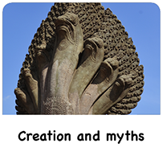
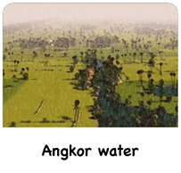

<!-- i-C-a -->
<div data-role="page" id="peopleangkor">
  <script src="js/slidebarac.js"></script>
  <div class="menuhousing"></div>
  <div class="homebtnholder"><div class="homebtnac"></div></div>
  <div class="mpbtnholder"><div class="mpbtnac"></div></div>
  <div class="cpbtnholder"><div class="cpbtnac"></div></div>
  <div class="infobtnholder"><div class="infobtnac"></div></div>
  <div class="credsbtnholder"><div class="credsbtnac"></div></div>
  <div class="menubtnholder"><div class="menubtnac"></div></div>
  
  <div class="navtitleholder" style="padding-top:14px;"><h1>Who were the people of Angkor?</h1></div>
  
    <div data-role="content" class="kidzcontent">
      <div class="navpeople-content">
         <p></p>
        <p></p>			
      </div>
        
      <div class="navpeoplebtn1">
  <p><a href="sub-ac-angkor-mystery.html" data-transition="slide"></a></p>
      </div>
      <div class="navpeoplebtn2">
        <p><a href="sub-ac-angkor-daugan.html" data-transition="slide" ></a></p>
      </div>
      <div class="navpeoplebtn3">
        <p><a href="sub-ac-angkor-creationmythslegends.html" data-transition="slide" ></a></p>
      </div>
      <div class="navpeoplebtn4">
        <p><a href="sub-ac-angkor-wateressence.html" data-transition="slide" ></a></p>
      </div>
	   <div class="navpeoplebtn5">
        <p><a href="sub-ac-angkor-angkorwat.html" data-transition="slide" ></a></p>
      </div>
        
      <div class="botlogoholder"><a href="home.html" class="homelinkbh"></a></div>
    </div> <!-- end content -->  
    
  
  <!--<div class="audiopanel">-->
    <div class="micbtnholder"><div class="micbtnac" id="playstoppeopleangkor"></div></div>
    <div class="bac"><div class="rwac" id="peopleangkoraudiobbtn"></div></div>
    <div class="plac"><div class="plpsac" id="peopleangkoraudioplbtn"></div></div>
    <div class="fac"><div class="fwac" id="peopleangkoraudiofbtn"></div></div>
    <div id="actualaudio-peopleangkor" style="visibility:hidden;"></div>
  <!--</div>-->
  <script>
    sound = new Audio(); // 'sound' is now an audio object
    var playing;
    var paused;
    (function() {
      playing = false;
      if(sound.canPlayType('audio/mpeg')) {
        $('#actualaudio-peopleangkor').html('<audio id="peopleangkoraudio" controls preload onpause="playangkor()" onplay="pauseangkor()"><source src="narrations/angkor_peopleofangkor.mp3" type="audio/mpeg"></audio>');
      } 
    
      $("#peopleangkor").swipe( { swipeRight:goBack, allowPageScroll:"auto"} );
    })();
    
    $('.homelinkbh').on('tap', function() { mainaudiobg.play(); bgsoundbh.pause(); bgsoundbh.currentTime = 0;});
    
    function goBack() {
      $.mobile.changePage("sub-ac-angkor.html", {transition: "slide", reverse: true });
    }
    
    function pauseangkor() {
      angkorbg.pause();
    }
    
    function playangkor() {
      angkorbg.play();
    }
    /* ******************** */
    $("#playstoppeopleangkor").on('tap', function() {
      if(!playing) {
        peopleangkoraudio.play();
        $('.micbtnac').css('background-position-x', '-81px');
        playing = true;
        paused = false;
      } else {
        peopleangkoraudio.pause(); volcanoaudio.currentTime = 0;
        $('.micbtnac').css('background-position-x', '0px');
        playing = false;
        paused = true;
      }
    });
    
    $("#peopleangkoraudioplbtn").on('tap', function() {
      if(!paused) {
        peopleangkoraudio.pause();
        paused = true;
      } else {
        peopleangkoraudio.play();
        paused = false;
      }
    });
    
    $("#peopleangkoraudiofbtn").on('tap', function() {
      var ctime = peopleangkoraudio.currentTime;
      peopleangkoraudio.currentTime = ctime + 10;
    });
    
    $("#peopleangkoraudiobbtn").on('tap', function() {
      var ctime = peopleangkoraudio.currentTime;
      peopleangkoraudio.currentTime = ctime - 10;
    });
    
    $("#peopleangkoraudiopsbtn").on('tap', function() {
      peopleangkoraudio.pause();
      //$(".audiopanel").css({"backgroundPosition":"0px 0px"});
    });
    
    $('.navbtn1').on('tap', function() { 
      nav1Effects(); 
    });
  </script>
</div> <!--//home-->